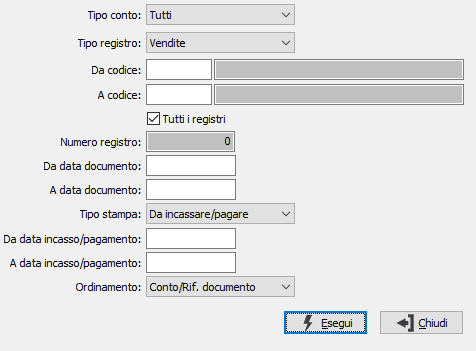

Analisi fatture ad Iva differita
Il programma genera un report di controllo delle fatture ad Iva differita emesse o ricevute. È possibile selezionare, entro due date indicate dall’utente, solo le fatture da incassare/pagare, solo le fatture incassate/pagate o tutte le fatture ad Iva differita.
Il programma presenta la seguente finestra video:

TIPO CONTO: consente di specificare se analizzare solo i documenti di Enti pubblici, privati o Tutti.
TIPO REGISTRO: consente di specificare il tipo di registro Iva: acquisti, vendite o corrispettivi.
DA CONTO: codice del sottoconto, presente in Anagrafica Sottoconti, da cui si desiderano iniziare l'analisi. Sul campo è attivo lo zoom F9.
A CONTO: codice del sottoconto, presente in Anagrafica Sottoconti, con cui si desidera terminare l'analisi. Sul campo è attivo lo zoom F9.
TUTTI I REGISTRI: definisce se esaminare tutti i sezionali relativi al tipo registro (casella con segno di spunta).
NUMERO REGISTRO: eventuale numero di serie sezionale di registro Iva al quale si vuole limitare l’esame delle fatture ad Iva differita.
DA DATA DOCUMENTO: eventuale data da cui si vuole iniziare la selezione delle fatture ad Iva differita. Confermando a vuoto, la selezione inizia dalla prima data utile per le fatture ad Iva differita.
A DATA DOCUMENTO: eventuale data a cui si vuole concludere la selezione delle fatture ad Iva differita. Confermando a vuoto, la selezione termina con l'ultima data disponibile per le fatture ad Iva differita.
TIPO STAMPA: combo box per definire il tipo di fatture da selezionare: tutte, da incassare/pagare, incassate/pagate oppure stampa del dettaglio incassi/pagamenti.
DA DATA INCASSO/PAGAMENTO: eventuale data di incasso/pagamento da cui si vuole iniziare la selezione delle fatture ad Iva differita. Confermando a vuoto, la selezione inizia dalla prima data incasso utile per le fatture ad Iva differita.
A DATA INCASSO/PAGAMENTO: eventuale data di incasso/pagamento a cui si vuole concludere la selezione delle fatture ad Iva differita. Confermando a vuoto, la selezione termina con l'ultima data incasso disponibile per le fatture ad Iva differita.
ORDINAMENTO: definisce il criterio di ordinamento dei dati in stampa: conto/riferimento documento, conto/data movimento, riferimento documento, data movimento.
Inseriti tutti i parametri, premendo il bottone Esegui viene lanciata la stampa.